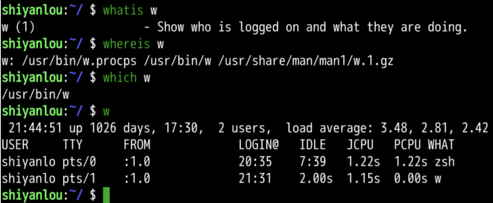
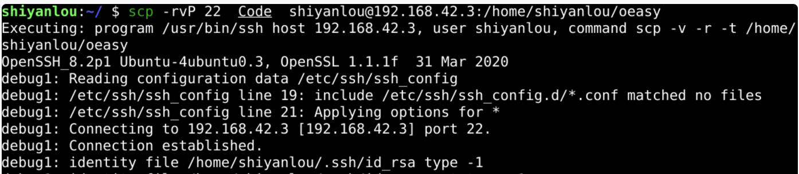
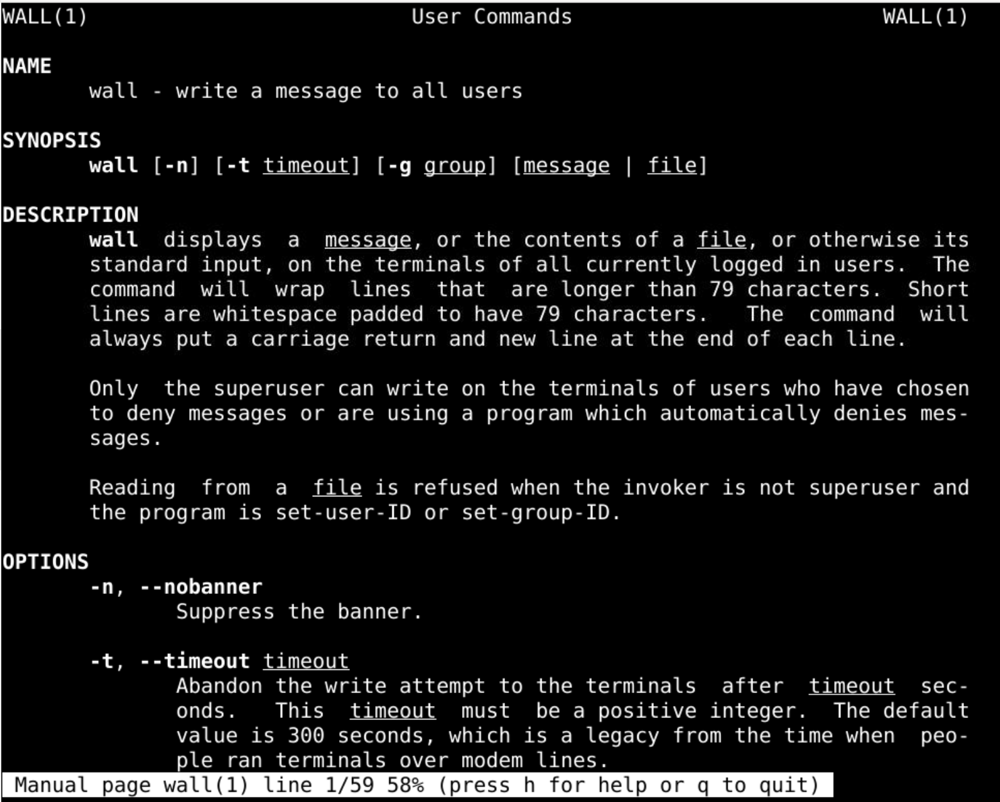

用户和用户组总结
回忆
- 上次我们研究了 wall 这个命令
- 这个命令可以给当前登录本服务的用户发消息
- 给指定某个组发消息
- 给指定的用户发消息
- 给所有用户发消息
查询用户
- 有三个命令可以查询用户
- whoami
- who
- w

列出用户信息
- id
- 可以显示出用户id的一些信息
- 我们目前的用户id就是shiyanlou

- /etc/passwd中有更详细的用户信息

- 这些信息被:分割为7列
新建用户
- 有两个命令可以添加用户
- adduser
- useradd
- useradd
- 很底层
- 可以找到源代码
- adduser
- 更前端一些
- 更交互一些
- 可以直接新建用户
删除用户

- adduser 新建
- deluser删除
passwd
- 命令passwd
- /usr/bin/passwd
- 可以设置用户的密码
- 用户的信息在
- /etc/passwd中
- 这两个虽然名字都是passwd
- 但是用途不同
- 可以设置用户默认的脚本解释器

- 设置之后还应该把配置文件复制到新用户的宿主文件夹
- 我们用的是zsh
- 究竟zsh是什么?
编译安装zsh
- zsh和bash类似
- 都是shell解释器
- 从github下载zsh

- 编译安装zsh
- 目前流行的oh-my-zsh是什么呢？
oh-my-zsh
- oh-my-zsh是zsh的一款皮肤
- 可以直接安装
- 也可以设置主题

- 远程登录的用户效果也是一样吗？
ssh
- 首先要安装ssh
- 然后要启动ssh 服务
- 可以设置ssh的登陆端口
- 登陆之后用户可以使用自己的宿主文件夹和shell
- 可以获得用户应有的一切权限
- 我可以把这个文件从云上拷贝到本地么？🤔
scp
使用scp - 远程进行文件拷贝 - 还是挺方便的 - 有一些参数 - -P 端口 - -r 递归 - -v 详细 - 这样拷贝文件真的很方便

- 但是有的时候想要执行一些命令

- 却告诉我没有权限
- 这应该怎么解决呢？
提权
- 我们这次研究了如何让用户可以以管理员身份运行程序
- 将用户加入sudo(27)这个组里面就可以
- 如何避免每次都要输入密码呢？
- 在/etc/sudoers.d里面添加用户名对应的文件
- 设置此用户不用输入密码就可以执行sudo命令

- 为什么sudo拥有超级管理员的权限呢？
- 因为sudo的权限是s
- 代表sudo会以root的权限运行
- 从视觉上看到是红色的
- 还有一些程序(wall)是黄色的

用户组(group)
新建了组(group) - addgroup - 有addgroup就有delgroup

- 可以将用户放到用户组中
- add oeasy ogroup
- 我们可以用wall
- 给oeasy、o2z发消息吗？🤔
wall
- 这个命令可以给当前登录本服务的用户发消息
- 给指定某个组发消息
- 给指定的用户发消息
- 给所有用户发消息
- who可以查询到有哪些用户在线

总结 🤨
- 为什么要有用户和用户组呢？
- 都用一个账号登录不是更简单吗？
- 这背后有什么样的考虑呢？🤔
- 先总结一下用户和用户组去
- 下次再说！👋